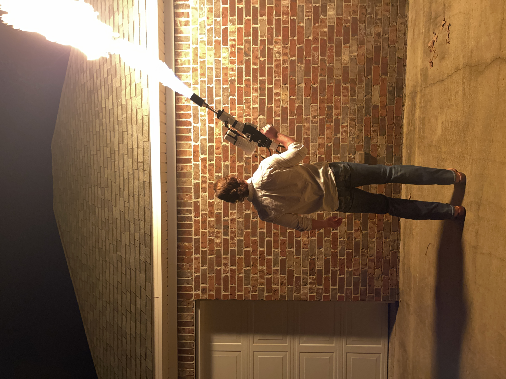

My Projects
Modified Dibels (website)
This was the first half of my research under Dr. Jake Qualls at Astate. The site is a modified version of two common literacy tests. We are using the data collected from these tests to train an Ai model. Our hypothesis is that this model will create the most readable font for dyslexic readers. I used the Django and PostgreSQL to build it.
Persistancy Score: 10/10 | 2022
Avant-Gardes: Rick Rolled
This was a NFT project I did back when the Bored Ape Yacht Club just came out. Feel free to check it out.
Persistancy Score: 10/10 | 2021
Richey's Rivalry
This was a very fufilling fundraising project for a friend, and I'm proud of what I was able to coordinate. That's all I'll say about this here.
Persistancy Score: 7/10 | 2020
Three weeks of machine learning
I hadn't committed to a personal project in a while. So I wanted to brush up on some machine learning, and just get something completed. The first week I build a simple feed forward neural network by hand. The second week I did a CNN by hand. The third week I did a transformer, but I definitely used some libraries to help me lol.
Persistancy Score: 6/10 | 2022
Reading smart contracts
I wanted to better understand Solidity, and hopefully think of a new web3 application. I mainly dove into SushiSwap and WonderlandDAO's contracts; although I poked around in some others. It was so cool being able to talk to the contract creators over the internet. For example BoringCrypto answered a few questions about his really clever BentoBox contract.
Persistancy Score: 5/10 | 2021
Tab Predictor
I thought it would be fun to build a basic model that predicts what tab you will open when you first open google chrome. In retrospect I should have used a different model structure, (RNN or transformer) and I only got the accuracy up to 60% on the test set.
Persistancy Score: 5/10 | 2020
Flamethrower
I got tired of writing code. I did this instead.
Persistancy Score: 3/10 | 2020
Vex EDR Clawbot
I had to make a guide for the EDR Clawbot during my senior year in highschool. Not hard but pretty fun.
Persistancy Score: 2/10 | 2020
Video journal camera glasses
** abandoned project **
Camera glasses aren't new: Snap spectacles and Ray-ban stories. But I really wanted a pair that could last for like 8 hours of filming. It would be like a video journal, but you could also search that video by people, things, or words you saw. Or even words you heard. I spent a long time planning and thinking about these. I started writing the software for them too. But as soon as I did some calculations for the battery life, I realized that was going to be an issue. Also, I don't think I really loved the idea all that much.
Persistancy Score: 1/10 | 2022
EMG sensor keyboard
** abandoned project **
This was going to be two bands you put around each forearm, and they would allow you to type without a physical keyboard being there. I couldn't ever figure out how these could actually be made. I spent a long time thinking about it though.
Persistancy Score: 0/10 | 2022
Decentralized social media
** abandoned project **
I was really excited about this idea. By the time I thought of it, LensProtocol was already in the works. I was just excited to see if this idea would work without having to actually build it myself. It has been launched for a while now, and hasn't really taken off. I think web3 tools aren't mainstream enough yet, or people don't care about owning their data and not being able to be censored that much. I'm not sure.
Persistancy Score: 0/10 | 2022